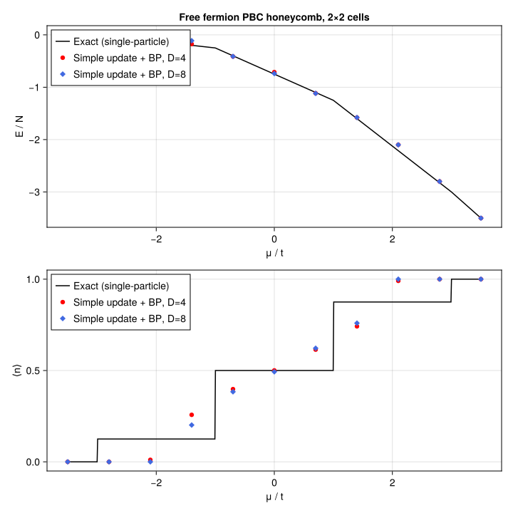

Free fermions on a honeycomb lattice
Imaginary-time evolution of spinless free fermions on a finite honeycomb lattice,
\[H = -t \sum_{\langle ij \rangle} \left( c^\dagger_i c_j + c^\dagger_j c_i \right) - \mu \sum_i n_i,\]
on an $n_1 \times n_2$ unit-cell PBC honeycomb torus (2 sites per cell, $N = 2 n_1 n_2$), via simple update on top of belief-propagation messages. We sweep $\mu$ at fixed $t$, compute the ground-state energy per site $E/N$ and the filling $\langle n \rangle$, and compare against the exact single-particle solution at the same finite $(n_1, n_2)$.
The honeycomb lattice has coordination 3 and girth 6, versus 4 and 4 for the square lattice — BP messages travel further before encountering a loop, so this is a regime where simple update on top of BP is naturally accurate. The bipartite spectrum is $\varepsilon_\pm(k) = \pm |f(k)| - \mu$ with
\[f(k) = -t \left( 1 + e^{i k \cdot a_1} + e^{i k \cdot a_2} \right), \qquad k \cdot a_j = 2\pi m_j / n_j.\]
This example can be run from the command line with:
julia --project=examples examples/free_fermion_honeycomb/main.jlusing Canopy: randn_state, BPMessages, belief_propagation,
UndirectedEdge, LocalGate, apply!, reduced_density_matrix, expect,
Strang, trotterize, edge_coloring
using TensorKit
using TensorKitTensors.FermionOperators: f_num, f_hopping, fermion_space
using MatrixAlgebraKit: truncrank, trunctol
using Graphs: SimpleGraph, add_edge!, edges, src, dst
using Random
using Statistics: mean
using Printf
using CairoMakieExact single-particle reference
Spinless tight-binding on a honeycomb $n_1 \times n_2$ PBC torus has finite-torus momenta satisfying $k \cdot a_j = 2\pi m_j / n_j$, and each $k$ contributes two bands $\varepsilon_\pm(k) = \pm |f(k)| - \mu$. The ground state fills every mode with $\varepsilon < 0$; modes at $\varepsilon = 0$ are left unfilled (a consistent convention at the band edge — relevant on sizes where $n_1$ and $n_2$ are both multiples of 3 and the Dirac points are sampled exactly).
function exact_per_site(n1::Int, n2::Int, μ::Real; t::Real=1.0)
εs = Float64[]
for m1 in 0:n1-1, m2 in 0:n2-1
f = -t * (1 + cis(2π * m1 / n1) + cis(2π * m2 / n2))
a = abs(f)
push!(εs, -a - μ)
push!(εs, a - μ)
end
filled = εs[εs.<0]
N = 2 * n1 * n2
return sum(filled) / N, length(filled) / N
endexact_per_site (generic function with 1 method)Honeycomb PBC graph
With $n_1 \times n_2$ unit cells, each carrying two sites ($A = 1$, $B = 2$), the linear vertex index is
\[\mathrm{idx}(i, j, s) = \bigl( (i-1)\, n_2 + (j-1) \bigr) \cdot 2 + s, \qquad i \in 1{:}n_1,\ j \in 1{:}n_2.\]
Each $A$ at $(i,j)$ connects to the $B$ sites at $(i,j)$, $(i+1,j)$, and $(i,j+1)$ (PBC).
function honeycomb_graph(n1::Int, n2::Int)
idx(i, j, s) = ((mod1(i, n1) - 1) * n2 + (mod1(j, n2) - 1)) * 2 + s
g = SimpleGraph(2 * n1 * n2)
for i in 1:n1, j in 1:n2
a = idx(i, j, 1)
add_edge!(g, a, idx(i, j, 2))
add_edge!(g, a, idx(i + 1, j, 2))
add_edge!(g, a, idx(i, j + 1, 2))
end
return g
endhoneycomb_graph (generic function with 1 method)Random PBC honeycomb state
function honeycomb_state(n1::Int, n2::Int, Dmax::Int; T::Type=ComplexF64)
g = honeycomb_graph(n1, n2)
P = fermion_space(Trivial)
V = Vect[fℤ₂](0 => cld(Dmax, 2), 1 => fld(Dmax, 2))
ekeys = [UndirectedEdge(src(e), dst(e)) for e in edges(g)]
return randn_state(T, g, P, V), ekeys
endhoneycomb_state (generic function with 1 method)Free-fermion bond operators
We distribute the bond Hamiltonian across edges as
\[h_e = -t\, \mathrm{hop}_e - \frac{\mu}{\deg(u)}\, n \otimes I - \frac{\mu}{\deg(v)}\, I \otimes n,\]
so that $\sum_e h_e = H$ exactly. On the honeycomb torus every vertex has degree 3.
function fermion_bond_hamiltonian(t::Real, μ::Real, deg_u::Int, deg_v::Int; T::Type=ComplexF64)
hop = f_hopping(T, Trivial)
n = f_num(T, Trivial)
I1 = id(fermion_space(Trivial))
return -t * hop - (μ / deg_u) * (n ⊗ I1) - (μ / deg_v) * (I1 ⊗ n)
endfermion_bond_hamiltonian (generic function with 1 method)Running a single (n₁, n₂, μ, Dmax) point
Each point is evolved with a Strang-split Trotter circuit over a decreasing-dτ schedule, re-converging the BP messages after every sweep.
const SCHEDULE = ((0.1, 60), (0.01, 60), (0.001, 60))
function run_one(n1::Int, n2::Int, μ::Real, Dmax::Int;
t::Real=1.0, seed::UInt=hash((n1, n2, μ, Dmax)))
Random.seed!(seed)
T = ComplexF64
state, ekeys = honeycomb_state(n1, n2, Dmax; T)
msgs = BPMessages(state)
msgs = belief_propagation(msgs, state; maxiter=300, tol=1e-6)
h_e = fermion_bond_hamiltonian(t, μ, 3, 3; T)
bond_hams = Dict(e => h_e for e in ekeys)
alg = Strang(edge_coloring(keys(bond_hams)))
circuits = Dict(dτ => trotterize(bond_hams, dτ, alg) for (dτ, _) in SCHEDULE)
trunc = truncrank(Dmax)
for (dτ, nsteps) in SCHEDULE
circuit = circuits[dτ]
for _ in 1:nsteps
apply!(state, msgs, circuit; trunc)
msgs = belief_propagation(msgs, state; maxiter=200, tol=1e-6)
end
end
N = 2 * n1 * n2
E = sum(real(expect(state, msgs, h_e, e)) for e in ekeys)
n_op = f_num(T, Trivial)
nbar = mean(real(expect(state, msgs, n_op, v)) for v in 1:N)
return E / N, nbar
endrun_one (generic function with 1 method)Scan and plot
Sweep $\mu$ at two bond dimensions and overlay the simple-update points on a finely sampled exact reference curve (the fine grid keeps the finite-size steps rendering correctly).
function main(; n1::Int=2, n2::Int=2, Dmaxs=(4, 8), μs=range(-3.5, 3.5; length=11), t::Real=1.0)
E_su = [similar(collect(μs), Float64) for _ in Dmaxs]
n_su = [similar(collect(μs), Float64) for _ in Dmaxs]
# Exact reference on a fine grid so finite-size steps render correctly.
μs_fine = range(first(μs), last(μs); length=801)
E_ex_fine = similar(collect(μs_fine), Float64)
n_ex_fine = similar(collect(μs_fine), Float64)
for (i, μ) in enumerate(μs_fine)
E_ex_fine[i], n_ex_fine[i] = exact_per_site(n1, n2, μ; t)
end
println("Free fermion PBC honeycomb n₁×n₂=$n1×$n2 (N=$(2*n1*n2) sites) Dmaxs=$Dmaxs t=$t")
cols = ["μ", "E/N (exact)", "⟨n⟩ (exact)"]
for D in Dmaxs
push!(cols, "E/N (D=$D)")
push!(cols, "⟨n⟩ (D=$D)")
end
println(" " * join((rpad(c, 13) for c in cols), " "))
for (i, μ) in enumerate(μs)
E_ex, n_ex = exact_per_site(n1, n2, μ; t)
@printf " %-13.3f %-13.8f %-13.8f" μ E_ex n_ex
for (k, Dmax) in enumerate(Dmaxs)
E_su[k][i], n_su[k][i] = run_one(n1, n2, μ, Dmax; t)
@printf " %-13.8f %-13.8f" E_su[k][i] n_su[k][i]
end
println()
flush(stdout)
end
colors = [:red, :royalblue, :darkgreen, :orange]
markers = [:circle, :diamond, :utriangle, :rect]
fig = Figure(size=(720, 720))
ax1 = Axis(fig[1, 1]; xlabel="μ / t", ylabel="E / N",
title="Free fermion PBC honeycomb, $n1×$n2 cells")
lines!(ax1, collect(μs_fine), E_ex_fine; label="Exact (single-particle)", color=:black)
for (k, Dmax) in enumerate(Dmaxs)
scatter!(ax1, collect(μs), E_su[k];
label="Simple update + BP, D=$Dmax",
color=colors[mod1(k, length(colors))],
marker=markers[mod1(k, length(markers))])
end
axislegend(ax1; position=:lt)
ax2 = Axis(fig[2, 1]; xlabel="μ / t", ylabel="⟨n⟩")
lines!(ax2, collect(μs_fine), n_ex_fine; label="Exact (single-particle)", color=:black)
for (k, Dmax) in enumerate(Dmaxs)
scatter!(ax2, collect(μs), n_su[k];
label="Simple update + BP, D=$Dmax",
color=colors[mod1(k, length(colors))],
marker=markers[mod1(k, length(markers))])
end
axislegend(ax2; position=:lt)
outdir = joinpath(@__DIR__, "figs")
mkpath(outdir)
outfile = joinpath(outdir, "free_fermion_honeycomb.svg")
save(outfile, fig)
println("wrote $outfile")
return fig
end
main()Free fermion PBC honeycomb n₁×n₂=2×2 (N=8 sites) Dmaxs=(4, 8) t=1.0
μ E/N (exact) ⟨n⟩ (exact) E/N (D=4) ⟨n⟩ (D=4) E/N (D=8) ⟨n⟩ (D=8)
-3.500 0.00000000 0.00000000 0.00000000 0.00000000 0.00000000 0.00000000
-2.800 -0.02500000 0.12500000 0.00000064 0.00000078 0.00000001 0.00000001
-2.100 -0.11250000 0.12500000 0.00063195 0.01092201 0.00002968 0.00006355
-1.400 -0.20000000 0.12500000 -0.17577391 0.25730969 -0.11210884 0.20140730
-0.700 -0.40000000 0.50000000 -0.41337278 0.39808565 -0.41153743 0.38353124
0.000 -0.75000000 0.50000000 -0.71129047 0.50053730 -0.73870814 0.49302573
0.700 -1.10000000 0.50000000 -1.11532635 0.61423166 -1.11806758 0.62178248
1.400 -1.60000000 0.87500000 -1.57964947 0.74173299 -1.57895909 0.75923801
2.100 -2.21250000 0.87500000 -2.09962149 0.99074771 -2.09995584 0.99989661
2.800 -2.82500000 0.87500000 -2.79999734 0.99999596 -2.79999999 0.99999999
3.500 -3.50000000 1.00000000 -3.50000000 1.00000000 -3.50000000 1.00000000
wrote /mnt/home/ldevos/Projects/Canopy/main/docs/src/examples/free_fermion_honeycomb/figs/free_fermion_honeycomb.svg

This page was generated using Literate.jl.